유기농업기사 (2019-04-27 기출문제)
1과목: 재배원론
1. 내건성이 큰 작물의 세포적 특성이 아닌 것은?
- 세포가 작다.
- 세포의 삼투압이 높다.
- 원형질막의 수분투과성이 크다.
- 원형질의 점성이 낮다.
(정답률: 60%)

2. 버널리제이션의 농업 이용에 가장 이용하지 않는 것은?
- 억제 재배
- 수량 증대
- 육종에 이용
- 대파(代播)
(정답률: 59%)
3. 다음 중 생존연한에 따른 분류 상 2년생 작물에 해당되는 것은?
- 보리
- 사탕무
- 호프
- 벼
(정답률: 70%)
4. 논벼가 다른 작물에 비해서 계속 무비료 재배를 하여도 수량이 급격히 감소하지 않는 이유로 가장 적절한 것은?
- 잎의 동화력이 크기 때문이다.
- 뿌리의 활력이 좋기 때문이다.
- 비료의 천연공급량이 많기 때문이다.
- 비료의 흡수력이 크기 때문이다.
(정답률: 81%)
5. 다음 중 고추의 일장 감응형은?
- LL 형
- II 형
- SS 형
- LS 형
(정답률: 53%)
6. 비늘줄기를 번식에 이용하는 작물은?
- 생강
- 마늘
- 토란
- 연
(정답률: 79%)
7. 다음 중 내염성이 가장 강한 작물은?
- 가지
- 양배추
- 셀러리
- 완두
(정답률: 81%)
8. 감자의 2기작 방식으로 추계 재배시 휴면 타파에 가장 효과적으로 이용하는 화학약제는?
- B-995
- Gibberellin
- Phosfon-D
- CCC
(정답률: 84%)
9. 다음 중 적산온도를 가장 적게 요하는 작물은?
- 옥수수
- 조
- 기장
- 메밀
(정답률: 87%)
10. 다음 중 작물 생육의 다량원소가 아닌 것은?
- K
- Cu
- Mg
- Ca
(정답률: 88%)
11. 수확물의 상처에 코르크층을 발달시켜 병균의 침입을 방지하는 조치를 나타내는 용어는?
- 큐어링
- 예냉
- CA 저장
- 후숙
(정답률: 91%)
12. 다음 중 작물의 복토 깊이가 가장 깊은 것은?
- 당근
- 생강
- 오이
- 파
(정답률: 74%)
13. 밭에 중경은 때에 따라 작물에 피해를 준다. 다음 중 중경에 대한 설명으로 가장 거리가 먼 것은?
- 중경은 뿌리의 일부를 단근시킨다.
- 중경은 표토의 일부를 풍식시킨다.
- 중경은 토양수분의 증발을 증가시킨다.
- 토양온열을 지표까지 상승을 억제, 동해를 조장한다.
(정답률: 47%)
14. 광합성 양식에 있어서 C4식물에 대한 설명으로 가장 거리가 먼 것은?
- 광호흡을 하지 않거나 극히 작게한다.
- 유관속초세포가 발달되어 있다.
- CO2 보상점은 낮으나 포화점이 높다.
- 벼, 콩 및 보리가 C4 식물에 해당된다.
(정답률: 74%)
15. 작물의 특성을 유지하기 위한 방법이 아닌 것은?
- 영양번식에 의한 보존재배
- 격리재배
- 원원종재배
- 자연교잡
(정답률: 85%)
16. 다음 중 단일성 작물로만 나열된 것은?
- 들깨, 담배, 코스모스
- 감자, 시금치, 양파
- 고추, 당근, 토마토
- 사탕수수, 딸기, 메밀
(정답률: 71%)
17. 다음 중 산성토양에 강하면서 연작의 장해가 가장 적은 작물로만 나열된 것은?
- 자운영, 양파
- 옥수수, 시금치
- 콩, 담배
- 벼, 귀리
(정답률: 66%)
18. 박과채소류 접목육묘의 특징으로 가장 거리가 먼 것은?
- 흡비력이 강해진다.
- 토양전염성병의 발생이 적어진다.
- 질소 흡수가 줄어들어 당도가 증가한다.
- 불량 환경에 대한 내성이 증대된다.
(정답률: 81%)
19. 다음 중 휴작의 필요 기간이 가장 긴 작물은?
- 시금치
- 고구마
- 수수
- 토란
(정답률: 74%)
20. 작물에서 화성을 유도하는데 필요한 중요 요인으로 가장 거리가 먼 것은?
- 체내 동화생산물의 양적 균형
- 체내의 cytokine 과 ABA의 균형
- 온도조건
- 일장조건
(정답률: 73%)
2과목: 토양비옥도 및 관리
21. 다음 중 토양 내 가장 많은 생물체량를 가지는 것은?
- 지렁이
- 진드기
- 개미
- 미생물
(정답률: 93%)
22. 다음 중 토성에 대한 설명으로 가장 거리가 먼 것은?
- 토성은 토양의 이화학적 성질에 영향을 미친다.
- 토성을 결정할 때 유기물 함량은 고려하지 않는다.
- 토성을 결정할 때 자갈의 함량은 고려할 필요가 없다.
- 토성은 토양용액의 수소 이온 농도에 의존하는 성질이 있다.
(정답률: 50%)
23. 다음 중 식물의 구성성분 중 토양에 들어가 미생물이 생성하는 다른 화합물들과 결합하여 토양부식을 이루는 물질로 가장 적절한 것은?
- 단백질
- 셀룰로오스
- 리그닌
- 전분
(정답률: 80%)
24. 다음 중 시간이 지날수록 토양을 산성화 시키는 비료로 가장 적절한 것은?
- 염화칼륨
- 석회질소
- 칠레초석
- 용성인비
(정답률: 65%)
25. 다음 중 가장 적절한 토양 구조 유형은?
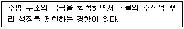
- 각괴상
- 입상
- 판상
- 각주상
(정답률: 81%)
26. 다음 중 토성과 작물생육과의 관계에 대한 설명으로 가장 적절하지 않은 것은?
- 토성이 같아도 지력은 달라질 수 있다.
- 일반적으로 식토가 양토에 비하여 지력이 높다.
- 토성은 작물생육 및 작물병해와 밀접한 관련이 있다.
- 식질계 토양은 보수력이 좋고 사질계 토양은 통기성이 좋다.
(정답률: 73%)
27. 토양을 구성하는 주요 광물 중 석영의 입자밀도로 가장 옳은 것은?
- 5.00 g·cm-3
- 4.75 g·cm-3
- 3.85 g·cm-3
- 2.65 g·cm-3
(정답률: 72%)
28. 토양 공기에 대한 설명으로 가장 적절하지 않은 것은?
- 토양 공기의 조성은 대기의 조성과 동일하다.
- 토양공기 유통의 중요한 기작은 확산작용이다.
- 토양 중 산소는 미생물의 분포에 큰 영향을 준다.
- 토양 중 통기성은 토양 내 양분의 화학성에 영향을 준다.
(정답률: 85%)
29. 다음 중 농경지 토양에서 석회요구량검정방법으로 가장 적절하지 않은 것은?
- TDR방법
- 완충곡선법
- ORD방법
- 교환산도법
(정답률: 62%)
30. 다음 중 공생질소 고정균에 해당하는 것으로 가장 옳은 것은?
- Azotobacter
- Clostridium
- Rhizobium
- Derxia
(정답률: 81%)
31. 특이산성토양에 가장 많이 축적되어 있는 화합물은?
- Ca
- S
- P
- K
(정답률: 67%)
32. 다음 중 작물이 흡수하는 질소 중 토양에 흡착이 가장 잘 되는 것은?
- 단백태 질소
- 질산태 질소
- 암모니아태 질소
- 시안아미드태 질소
(정답률: 67%)
33. 다음 중 토양 생성의 주요 인자로 가장 적절하지 않은 것은?
- 기후
- 모재
- 시간
- 경운
(정답률: 92%)
34. 다음 중 점토광물이고, 양이온교환용량이 가장 높은 것은?
- kaolinite
- chlorite
- quartz
- allophane
(정답률: 58%)
35. 다음 중 화성암이며, 우리나라 토양의 주요 모재가 되는 암석으로 가장 옳은 것은?
- 현무암
- 반려암
- 석회암
- 화강암
(정답률: 86%)
36. 다음 중 점토에 대한 설명으로 가장 거리가 먼 것은?
- 2차 광물이다.
- 비표면적이 크다.
- 가소성과 점착력이 크다.
- 모세관력은 매우 약하다.
(정답률: 76%)
37. 다음 설명에 가장 적절한 작용은?
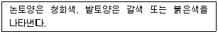
- 분해에 의한 유기물 함량 변화
- 질소의 함량 변화
- 인의 함량 변화
- 철의 산화, 환원
(정답률: 83%)
38. 다음 중 우리나라 토양이 가장 많이 함유하는 점토광물은?
- illite
- chlorite
- kaolinite
- montmorillonite
(정답률: 70%)
39. 다음 중 토양내 인산의 고정화를 방지하는 방법으로 가장 적절한 것은?
- 양이온 미량원소의 시비
- 유기물 투입
- 철산화물의 투입
- 토양의 알칼리화
(정답률: 60%)
40. 다음 중 염류 토양의 관리 방안으로 가장 적절하지 않은 것은?
- 시비를 자주한다.
- 객토를 한다.
- 유기물을 시용한다.
- 배수체계를 향상시킨다.
(정답률: 85%)
3과목: 유기농업개론
41. 자가불화합성을 이용하는 것으로만 나열된 것은?
- 멜론, 고추
- 토마토, 옥수수
- 무, 배추
- 수박, 밀
(정답률: 79%)
42. 다음 중 요수량이 가장 큰 것은?
- 옥수수
- 완두
- 밀
- 보리
(정답률: 59%)
43. 과수의 결과습성에서 좋은 결과를 시키려고 할 때 2년생 가지에 결실하는 것으로만 나열된 것은?
- 감, 밥
- 포도, 감귤
- 비파, 호두
- 복숭아, 자두
(정답률: 75%)
44. 시설 내의 환경특이성에 대한 설명으로 틀린 것은?
- 온도는 위치별로 분포가 다르다.
- 일교차가 적다.
- 광분포가 불균일하다.
- 광량이 감소한다.
(정답률: 60%)
45. 대들보라고도 하며, 용마루 위에 놓이는 수평재는?
- 보
- 왕도리
- 샛기둥
- 천창
(정답률: 56%)
46. 유기축산물의 자급 사료 기반에 대한 내용이다. ( )에 알맞은 내용은? (단, 축종별 가축의 생리적 상태, 지역 기상조건의 특수성 및 토양의 상태 등을 고려하여 외부에서 유기적으로 생산된 조사료를 도입할 경우를 제외한다.)
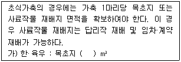
- 1932
- 2000
- 2475
- 2500
(정답률: 75%)
47. 다음 중 포식성 곤충에 해당하는 것은?
- 침파리
- 고치벌
- 꼬마벌
- 꽃등에
(정답률: 63%)
48. 전류가 텅스텐 필라멘트를 가열할 때 발생하는 빛을 이용하는 등은?
- 수은등
- 메탈할라이드등
- 백열등
- 고압나트륨등
(정답률: 79%)
49. 다음 중 산성토양에 가장 강한 것은?
- 메밀
- 겨자
- 고추
- 완두
(정답률: 56%)
50. 다음에서 설명하는 것은?
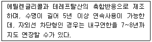
- 폴리에틸렌테레프탈레이트필름
- 에틸렌아세트산필름
- 염화비닐필름
- 폴리에틸렌필름
(정답률: 66%)
51. 다음 중 연작의 해가 가장 적은 것은?
- 토란
- 당근
- 고추
- 오이
(정답률: 57%)
52. 유기배합사료 제조용 물질 중 단미사료에서 단백질류에 해당하는 것은?
- 골분
- 어골회
- 패분
- 어분
(정답률: 84%)
53. 담배 종자처럼 종자가 매우 미세하여 기계파종이 어려울 경우 종자 표면에 화학적으로 불활성의 고체물질을 피복하여 종자를 크게 만드는 것은?
- 필름코팅
- 피막종자처리
- 종자펠릿
- 매트종자처리
(정답률: 73%)
54. 다음 중 베드의 바닥에 일정한 크기의 구배를 만들어 얇은 막상의 양액이 흐르도록 하고, 그 위에 작물의 뿌리가 일부가 닿게 하여 재배하는 방식으로 뿌리의 일부는 공중에 노출되고, 나머지는 흐르는 양액에 닿아 공중산소와 수중산소를 다 같이 이용할 수 있는 것은?
- 분무경
- 박막수경
- 환류방식 담액수경
- 등량교환방식 담액수경
(정답률: 61%)
55. 다음 중 혼파에 대한 설명으로 가장 적절하지 않은 것은?
- 잡초가 경감한다.
- 산초량이 평준화된다.
- 공간을 효율적으로 이용할 수 있다.
- 파종작업이 편리하다.
(정답률: 79%)
56. 짧은 원줄기 상에 3~4개의 원가지를 발달시켜 수형이 술잔모양으로 되게 하는 정지법이며, 개심형이라고도 하는 것은?
- 덕형
- 울타리형
- 원추형
- 배상형
(정답률: 83%)
57. 유기축산물의 동물복지 및 질병관리에 대한 내용으로 틀린 것은?
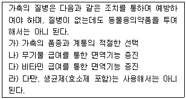
- 가
- 나
- 다
- 라
(정답률: 63%)
58. 한·육우 유기가축 1마리당 갖추어야 하는 가축사육시설의 소요면적에 대한 내용이다. ( ) 안에 알맞은 내용은?
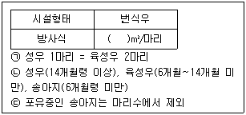
- 20
- 15
- 10
- 5
(정답률: 59%)
59. 우량품종에 한두 가지 결점이 있을 때 이를 보완하는데 효과적인 육종방법으로 양친 A와 B를 교배한 F1을 양친 중 어느 하나와 다시 교배하는 것은?
- 여교배육종
- 파생계통육종
- 1개체 1계통육종
- 순환선발
(정답률: 89%)
60. 한 포장 내에서 위치에 따라 종자, 비료, 농약 등을 달리함으로써 환경문제를 최소하하면서 생산성을 최대로 하려는 농업은?
- 자연농업
- 정밀농업
- 유기농업
- 생태농업
(정답률: 72%)
4과목: 유기식품 가공.유통론
61. 농산물 유통 시 고려해야 하는 특성이 아닌 것은?
- 계절에 따른 생산물의 변동성
- 농산물 자체의 부패 변질성
- 전국적으로 분산되어 생산되는 분산성
- 짧은 유통경로로 인한 낮은 유통마진율
(정답률: 79%)
62. 가열살균에서 습열과 건열을 설명한 것 중 틀린 것은?
- 미생물의 살균효과는 봍오 습기가 있을 때 보다 건조한 상태로 가열할 때가 살균효과가 떨어진다.
- 습열에 의한 세균의 사멸은 세포내 단백질의 응고로 일어난다.
- 대부분의 저온살균과 고온살균을 건열을 이용한다.
- 건열에 의한 세균의 사멸은 세균의 산화과정에 의해서 일어난다.
(정답률: 46%)
63. 부가가치세가 과세되는 가공조작은?
- 껍질벗기기
- 맛내기
- 소금절이기
- 말리기
(정답률: 79%)
64. 유기적 가공의 원칙이 아닌 것은?
- 유기가공식품과 비유기가공식품의 혼용사용
- 물리적 가공방법
- 생물학적 가공방법(유전자 조작 제외)
- 유기적 순수성 유지
(정답률: 90%)
65. 유기가공식품 생산 및 취급(유통, 포장 등) 시 사용이 가능한 재료에 대한 설명으로 틀린 것은?
- 무수아황산은 식품첨가물로서 과일주에 사용 가능하다.
- 구연산은 과일, 채소제품에 사용 가능하다.
- 질소는 식품첨가물이나 가공보조제로 모두 사용할 수 있다.
- 과산화수소는 식품첨가물로 사용하여 식품의 세척과 소독에 사용가능하다.
(정답률: 68%)
66. 수박 한통의 유통단계별 가격은 농가수취가격 5000원, 위탁상가격 6000원, 도매가격 6500원, 소비자가격은 8500원이다. 수박 총 거래량이 100개라고 하면, 유통마진의 가치(VMM)는 얼마인가?
- 350000원
- 200000원
- 150000원
- 100000원
(정답률: 76%)
67. 유기식품의 생산 및 관리에 대한 설명으로 옳은 것은?
- 농어업 부산물의 1회 사용을 통해 생산성 및 위생성을 향상시킨다.
- 농어업의 환경보전기능을 증대시키고 농어업으로 인한 환경오염을 줄인다.
- 생명순환의 원리는 생태계 순환을 단절시킴으로써 관철될 수 있다.
- 유기농업의 생명과은 미생물과 동식물 및 인간 간의 상호 분리성을 강조한다.
(정답률: 72%)
68. 초고압 처리 시 미생물의 살균 원리와 거리가 먼 것은?
- 세포막 구성단백질의 변성
- 세포생육의 필수아미노산 흡수억제
- 세포막 투과성 억제
- 세포액 누출량 증가
(정답률: 53%)
69. 식품포장지로 사용되는 골판지에 대한 설명으로 틀린 것은?
- 골의 높이와 골의 수에 따라 A, B, C, D, E, F로 구분한다.
- A, C, B의 순서로 골의 높이가 높다.
- 단위길이당 골의 수가 가장 적은 것은 A 이다.
- 골의 형태는 U형과 V형이 있다.
(정답률: 60%)
70. 미생물의 살균에 대한 설명으로 틀린 것은?
- 사멸방법으로 주로 열처리를 이용한다.
- D값이란 일정온도에서 일군의 미생물이 90% 사멸될 때까지 걸리는 시간이다.
- Z값이란 D값을 1/10로 감소시키는데 소요되는 시간이다.
- 보툴리누스 포자를 열처리하려면 D값의 12배 만큼 처리해야 한다.
(정답률: 57%)
71. 식품과 관련된 위해인자의 설명으로 틀린 것은?
- 유기염소제 살충제는 염소를 함유하고 있으면서 강력한 살충효과를 나타내지만 분해기간이 길어 자연에 오랫동안 잔류된다.
- 주석은 통조림 용기에 도금에 사용하고 있으며, PVC의 안정제로 octyl 주석이 사용된다.
- 다이옥신은 염화비닐 등 염소가 들어간 물질을 불완전 연소시켜야 배출이 억제된다.
- 카드뮴은 일본에서 이타이이타이병을 일으킨 물질로 중독되면 골연화증이 유발된다.
(정답률: 73%)
72. 구토 및 콜레라 증세를 보이며 간장과 신장의 침해를 보이는 맹독성의 버섯독은?
- 뉴린
- 무스카린
- 아마니타톡신
- 콜린
(정답률: 69%)
73. 통조림과 병조림의 제조 중 탈기의 효과가 아닌 것은?
- 산화에 의한 맛, 색, 영양가 저하 방지
- 저장 중 통 내부의 부식 방지
- 호기성 세균 및 곰팡이의 발육 억제
- 단백질에서 유래된 가스성분 생성
(정답률: 91%)
74. 농산물 가격의 파동이 심한 이유에 대한 설명으로 틀린 것은?
- 생산에 많은 시간이 소요되어 수요와 공급의 불균형을 심화시킨다.
- 수요가 급증할 경우 공급의 비탄력성으로 물량이 바로 증가하지 못하기 때문에 가격이 급등한다.
- 초과 수요 발생 시 후발 생산자들이 생산한 농산물의 공급물량으로 인해 초과공급 현상이 발생하여 가격은 더욱 상승한다.
- 가격 급등 시 새로운 생산자가 생겨도 재배기간 중에 농산물 가격이 계속 상승함에 따라 계속적인 가격상승이 발생한다.
(정답률: 81%)
75. 황변미 독소를 생산할 수 있는 곰팡이로 짝지어진 것은?
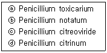
- ⓐ, ⓑ, ⓒ
- ⓑ, ⓒ, ⓓ
- ⓐ, ⓒ, ⓓ
- ⓐ, ⓑ, ⓓ
(정답률: 58%)
76. 포장재로서 유리의 단점이 아닌 것은?
- 충격과 열에 의해 깨지기 쉽다.
- 기체 투과성 및 투습성이 높다.
- 빛이 투과하여 내용물이 변하기 쉽다.
- 수송 및 포장에 경비가 많이 든다.
(정답률: 89%)
77. 두부응고제, 영양강화제로 사용되는 첨가물은?
- 겔화제(gelling agent)
- 과산화수소(hydrogen peroxide)
- 염화칼슘(calcium chloride)
- 글루콘산(gluconic acid)
(정답률: 82%)
78. 다음 식품 위해미생물 중 발육에 필요한 최저 수분활성도가 가장 낮은 것은?
- E. coli
- Clostridium botulinum
- Xeromyces bisporus
- Salmonella newport
(정답률: 52%)
79. 어떤 융점이 낮은 식물성유지가 동물성 유지보다 산패가 적게 나타날 때 가장 주요한 원인은?
- 이중결합이 많다.
- 분자량이 낮다.
- 항산화제가 많이 들어있다.
- 지방산 chain 길이가 길다.
(정답률: 57%)
80. 어떤 유기농산물의 생산자 수취가격이 2000원, 납품업제 공급가격이 2200원, 소비자 지불가격은 2500원일 때 총유통마진율은?
- 10%
- 11%
- 20%
- 25%
(정답률: 56%)
5과목: 유기농업관련 규정
81. 농림축산식품부 소관 친환경농어업 육성 및 유기식품 등의 관리·지원에 관한 법률 시행규칙상 경영 관련 자료에서 농산물·임산물 생산자에 대한 내용이다. ( )에 알맞은 내용은?
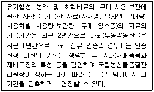
- 3개월 이상 3년 이하
- 6개월 이상 3년 이하
- 9개월 이상 3년 이하
- 12개월 이상 3년 이하
(정답률: 57%)
82. 유기농어업자재에 대한 설명으로 가장 적절한 것은?
- 유기식품등, 무농약농수산물등 또는 유기농어업자재를 생산, 제조·가공 또는 취급하는 모든 과정에서 사용 가능한 것으로서 농립축산식품부령 또는 해양수산부령으로 정하는 물질을 말한다.
- 유기농수산물을 생산, 제조·가공 또는 취급하는 과정에서 사용할 수 있는 허용물질을 원료 또는 재료로 하여 만든 제품을 말한다.
- 친환경농수산물, 유기식품등 또는 유기농어업자재를 생산, 제조·가공하거나 취급하는 것을 업(業)으로 하는 개인 또는 법인을 말한다.
- 농수사물, 식품, 비식용가공품 또는 농어업용자재를 저장, 포장, 운송, 수입 또는 판매하는 활동을 말한다.
(정답률: 69%)
83. ( ) 에 알맞은 내용은?
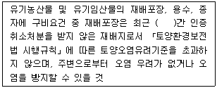
- 1년
- 2년
- 3년
- 5년
(정답률: 72%)
84. 무농약농산물등의 표시 기준에서 작도법의 도형 표시로 가장 거리가 먼 것은?
- 표시 도형의 가로의 길이(사각형의 왼쪽 끝과 오른쪽 끝의 폭 : W)를 기준으로 세로의 길이는 0.95 × W 의 비율로 한다.
- 표시 도형의 흰색 모양과 바깥 테두리(좌·우 및 상단부 부분에만 해당한다)의 간격은 0.1 × W 로 한다.
- 표시 도형의 흰색 모양 하단부 좌측 태극의 시작점은 상단부에서 0.95 × W 아래가 되는 지점으로 한다.
- 표시 도형의 흰색 모양 하단부 우측 태극의 끝점은 상단부에서 0.75 × W 아래가 되는 지점으로 한다.
(정답률: 66%)
85. 친환경농어업 육성 및 유기식품 등의 관리·지원에 관한 법률상 민간단체의 역할에 대한 설명이다. ( )에 대한 내용으로 가장 거리가 먼 것은?
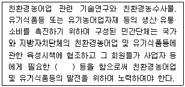
- 교육
- 훈련
- 기술개발
- 친환경농작물 평가항목개발
(정답률: 65%)
86. 유기축산물의 사료 및 영양관리에서 유기가축에는 몇 퍼센트 유기사료를 급여하는 것을 원칙으로 하여야 하는가? (단, “극한 기후조건 등의 경우에는 국립농산물품질관리원장이 정하여 고시하는 바에 따라 유기사료가 아닌 사료를 급여하는 것을 허용할 수 있다.”는 제외한다.)
- 70 퍼센트
- 85 퍼센트
- 90 퍼센트
- 100 퍼센트
(정답률: 90%)
87. 농립축산식품부 소관 친환경농어업 육성 및 유기식품 등의 관리·지원에 관한 법률 시행규칙에 대한 내용이다. ( )에 알맞은 내용은?
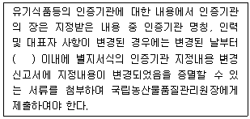
- 1개월
- 3개월
- 6개월
- 12개월
(정답률: 74%)
88. 친환경농업에 대한 설명으로 가장 적절한 것은?
- 친환경농어업 중 농산물·축산물·임산물을 생산하는 산업을 말한다.
- 유기농축산물, 유기가공식품 및 비식용유기가공품을 말한다.
- 유기농축산물을 생산, 제조·가공 또는 취급하는 과정에서 사용할 수 있는 허용물질을 원료 또는 재료로 하여 만든 제품을 말한다.
- 유기식품등, 무농약농수산물등 또는 유기농어업자재를 생산, 제조·가공 또는 취급하는 모든 과정을 통해 농산물을 생산하는 산업을 말한다.
(정답률: 65%)
89. 농림축산식품부 소간 친환경농어업 육성 및 유기식품 등의 관리·지원에 관한 법률시행규칙상 인증취소 등 행정처분의 기준 및 절차에서 인증신청서, 첨부서류, 인증심사에 필요한 서류를 거짓으로 작성하여 인증을 받은 경우 1차 행정처분기준은?
- 해당 인증품의 인증표시 제거·정지
- 시정명령
- 인증취소
- 해당 제품의 광고 금지 및 인증표시 제거·정지
(정답률: 72%)
90. 농어업 자원·환경 및 친환경농어업 등에 과한 실태조사·평가에 대한 내용이다. ( )에 대한 내용으로 가장 거리가 먼 것은?
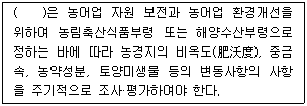
- 환경부장관
- 농림축산식품부장관
- 해양수산부장관
- 지방자치단체의 장
(정답률: 53%)
91. ( )에 알맞은 내용은?
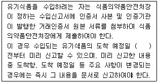
- 30일
- 15일
- 10일
- 5일
(정답률: 52%)
92. ( )에 알맞은 내용은?
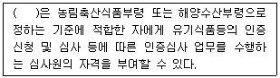
- 국립종자원장
- 농업기술센터장
- 농림축산식품부장관
- 환경부장관
(정답률: 78%)
93. 유기농업자재 공시를 갱신하려는 공시사업자는 유효기간 만료 몇 개월 전까지 별지서식의 유기농업자재 공시 갱신신청서에 유기농업자재 공시 생산계획서의 서류를 첨부하여 공시기관의 장에게 제출하여야 하는가? (단, 변경사항이 있는 경우이다.)
- 12개월
- 9개월
- 5개월
- 3개월
(정답률: 84%)
94. 유기가공식품·비식용유기가공품에서 생산물의 품질관리 등에 대한 내용이다. ( )에 가장 적절한 내용은? (단, 유기가공식품의 경우마 해당한다.)
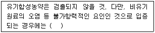
- 0.1 ppm 이하까지 허용
- 0.⑤ ppm 이하까지 허용
- 0.01 ppm 이하까지 허용
- 0.001 ppm 이하까지 허용
(정답률: 79%)
95. 유기식품등의 인증기관에 대한 내용 중 국립농산물품질관리원장이 인증기관을 지정하려는 경우에는 해당 연도의 1월 31일까지 해당 연도의 지정 신청기간 등 인증기관 지정에 관한 사항을 며칠 이상 공고하여야 하는가?
- 5일
- 10일
- 15일
- 20일
(정답률: 61%)
96. 유기식품등의 인증 및 인증절차 등에서 인증의 유효기간으로 가장 적절한 것은?
- 인증의 유효기간은 인증을 받을 날부터 6개월로 한다.
- 인증의 유효기간은 인증을 받을 날부터 1년으로 한다.
- 인증의 유효기간은 인증을 받을 날부터 2년으로 한다.
- 인증의 유효기간은 인증을 받을 날부터 3년으로 한다.
(정답률: 79%)
97. 유기식품등, 인증사업자 및 인증기관의 사후관리에서 인증사업자 또는 인증기관의 지위를 승계할 수 있는 조건으로 가장 거리가 먼 것은?
- 인증사업자가 사망한 경우 그 제품 등을 계속하여 생산, 제조·가공 또는 취급하려는 상속인
- 인증사업자나 인증기관이 그 사업을 양도한 경우 그 양수인
- 인증사업자가 의식불명인 경우 국가에서 2년간 운영 후 생산, 제조·가공 또는 취급하려는 상속인에게 승계
- 인증사업자나 인증기관이 합병한 경우 합병 후 존속하는 법인이나 합병으로 설립되는 법인
(정답률: 67%)
98. 유기농축산물의 함량에 따른 제한적 유기표시의 기준에서 유기농축산물의 함량에 따른 표시기준 중 특성 원재료로 유기농축산물을 사용한 제품에 대한 내용으로 가장 거리가 먼 것은?
- 특정 원재료로 유기농축산물만을 사용한 제품이어야 한다.
- 표시장소는 원재료명 및 함량 표시란에만 표시할 수 있다.
- 해당 원재료명의 일부로 “유기”라는 용어를 표시할 수 없다.
- 원재료명 및 함량 표시란에 유기농축산물의 총함량 또는 원료별 함량을 백분율(%)로 표시하여야 한다.
(정답률: 76%)
99. “공시사업자는 공시를 받은 제품을 생산하거나 수입하여 판매한 실적을 농림축산식품부령 또는 해양수산부령으로 정하는 바에 따라 정기적으로 그 공시심사를 한 공시기관의 장에게 알려야 한다.”를 위반하여 인증품 또는 공시를 받은 유기농어업자재의 생산, 제조·가공 또는 취급 실적을 공시기관의 장에게 알리지 아니한 자의 과태료는?
- 500만원 이하의 과태료
- 600만원 이하의 과태료
- 900만원 이하의 과태료
- 1천만원 이하의 과태료
(정답률: 88%)
100. 유기농어업자재의 공시에서 공시의 유효기간으로 가장 적절한 것은?
- 공시를 받은 날부터 6개월로 한다.
- 공시를 받은 날부터 1년으로 한다.
- 공시를 받은 날부터 2년으로 한다.
- 공시를 받은 날부터 3년으로 한다.
(정답률: 54%)